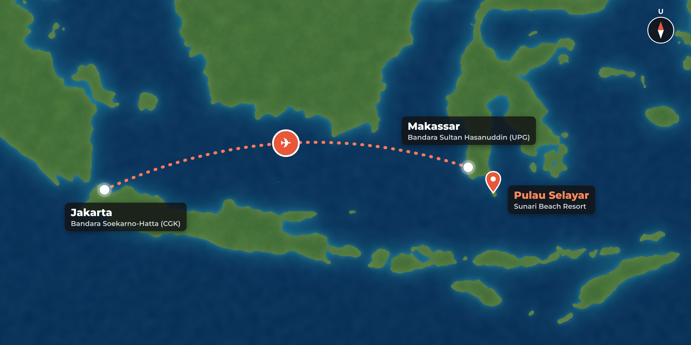

Jakarta ✈️ Makassar ⛴️ Selayar
Senja ini menunggumu
di Pantai Sunari.
Begini cara ke Sunari Beach Resort dari Jakarta, lebih mudah dari yang kamu kira.
Simpan dulu, biar liburanmu tinggal berangkat.
SunaRi · SelayarGeser untuk rutenya →01 / 11
3 jalan menuju senja
Jakarta → Makassar → Selayar
Opsi A · Paling cepat
Udara
1Pesawat Jakarta → Makassar
2Pesawat Makassar → Aroeppala
3Mobil ke SunaRi
Total di jalan
±3,5 jam
Opsi B · Paling berkesan
Darat & feri
1Pesawat Jakarta → Makassar
2Mobil Makassar → Bira
3Feri Bira → Pamatata
4Mobil ke SunaRi
Total di jalan
±10–11 jam
Opsi C · Santai di kapal
KM Dharma Kartika III Makassar → Benteng
±10–11 jam
Pilih yang paling cocok, semuanya berakhir di senja yang sama. Geser →
SunaRi · Selayar#sunarisunsetmoment02 / 11
Opsi A & B
Langkah 1


Jakarta → Makassar
Naik
✈️ Pesawat ke Bandara Sultan Hasanuddin (UPG)
Catatan
Banyak pilihan jadwal setiap hari. Liburanmu dimulai di sini.
SunaRi · Selayar#sunarisunsetmoment03 / 11
Opsi A · Udara
Langkah 2 dari 3
Makassar → Aroeppala
Naik
🛩️ Pesawat ke Bandara H. Aroeppala
Catatan
Jadwal terbatas, cek minimal H-7. Dari jendela, birunya Selayar sudah menyapa.
SunaRi · Selayar#sunarisunsetmoment04 / 11
Opsi B · Darat
Langkah 2 dari 4
Makassar → Bira
Naik
🚗 Mobil/bus dari Terminal Malengkeri
Catatan
Berangkat pagi, nikmati jalan pesisir selatan Sulawesi.
SunaRi · Selayar#sunarisunsetmoment05 / 11
Opsi B · Feri
Langkah 3 dari 4
Bira → Pamatata
Naik
⛴️ Feri penyeberangan ke Pulau Selayar
Catatan
Cek jadwal lebih dulu. Angin laut jadi penyambut pertama.
SunaRi · Selayar#sunarisunsetmoment06 / 11
Opsi C · Kapal
Langkah 2 dari 3
Makassar → Benteng
Naik
🚢 KM Dharma Kartika III, langsung tanpa feri
Catatan
Berangkat malam, tidak setiap hari. Tidur di kapal, bangun sudah di Selayar.
SunaRi · Selayar#sunarisunsetmoment07 / 11
Semua opsi
Langkah terakhir
Selangkah lagi ke SunaRi
Dari titik kedatangan · naik mobil
Bandara H. Aroeppala
dari Opsi A
±10–15 menit
Pelabuhan Pamatata
dari Opsi B
±1–1,5 jam
Pelabuhan Benteng
dari Opsi C
±20–30 menit
🚐 Biar kami yang menjemput (berbayar). Kabari jadwal tibamu lewat WhatsApp.
SunaRi · Selayar#sunarisunsetmoment08 / 11

Supaya perjalananmu tenang
Bekal sebelum berangkat
🎫Pesan tiket pesawat & feri lebih awal, apalagi saat libur panjang
💵Siapkan uang tunai secukupnya untuk di perjalanan
🚐Kabari jadwal tibamu, biar kami siapkan penjemputan
🗺️Simpan lokasi SunaRi di Google Maps, biar tidak tersesat
SunaRi · Selayar#sunarisunsetmoment09 / 11

Sampai di sini, semua capek perjalanan terbayar. 🌅
SUNARI · SELAYAR10 / 11
Bingung atur perjalanannya?
Biar kami bantu
WhatsApp 0821-8903-3044
🔖Simpan untuk liburanmu berikutnya
📩Kirim ke teman tripmu
👥Tag orang yang ingin kamu ajak menikmati senja
Pantai Sunari · Selayar
#sunarisunsetmoment